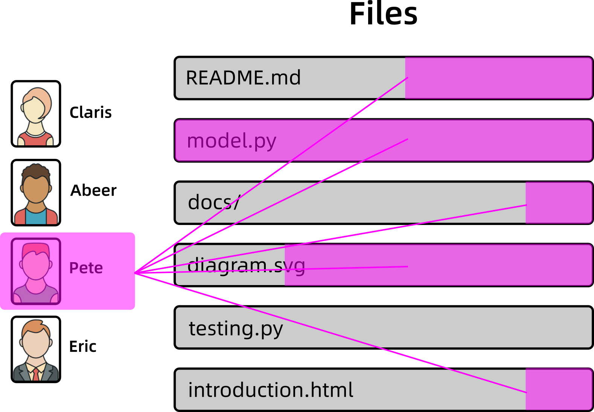

Aragon 负责的是 tokens，它不管「内容」方面的东西。
Git 这边需要的是 将每个成员的贡献「可视化」出来，以方便其他人 判断他的贡献价值。
注意 我们是用 Git 的 API 读取 repository 资料，这并不依赖 GitHub 提供资料。
我们打算支缓这几种文件的可视化，因为它们的格式是很标准的：
其他格式的文件，由于没有可视化，那就不能观察到每个人的局部贡献，只能当成一个整体 unit.
可视化的意思是，可以查看每一成员的贡献：
再点击进去文件内：

Discord 的目的是 管理「聊天室」，每个 cluster 有独立的聊天室，互相之间可以传递讯息：